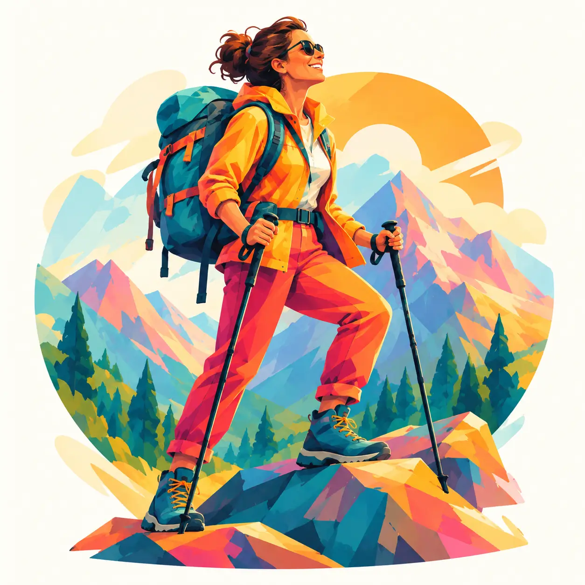

Meet this archetypeMountain Addict
A little perspective. Several thousand metres of it.

You want a challenge with space around it. Distance from the everyday helps you meet difficulty on your own terms and rediscover perspective.
Your gentle reminder
A summit is optional; a safe return is part of the adventure. You can enjoy a gentler path too.
Try this next
Start with a local marked trail suited to your experience.
For friends and family
Respect her independence and help with sensible planning. A gentle walk can be just as welcome as a big climb.
Take the quiz